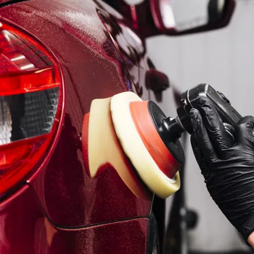
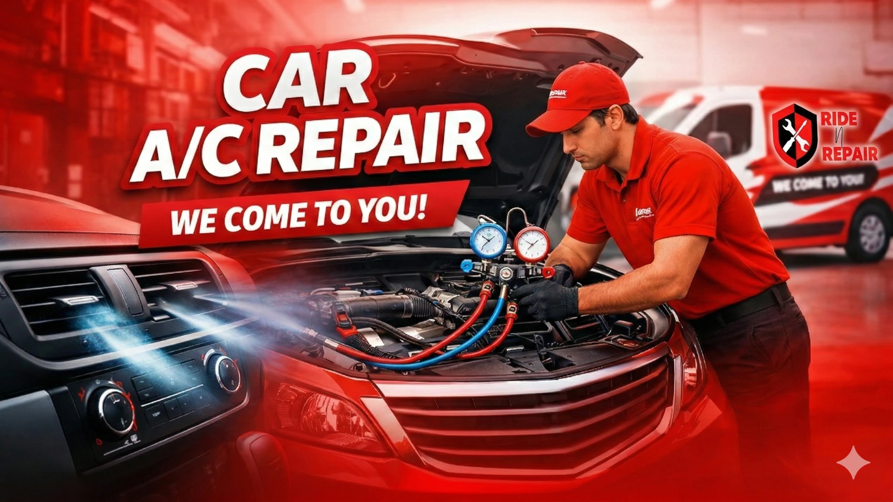
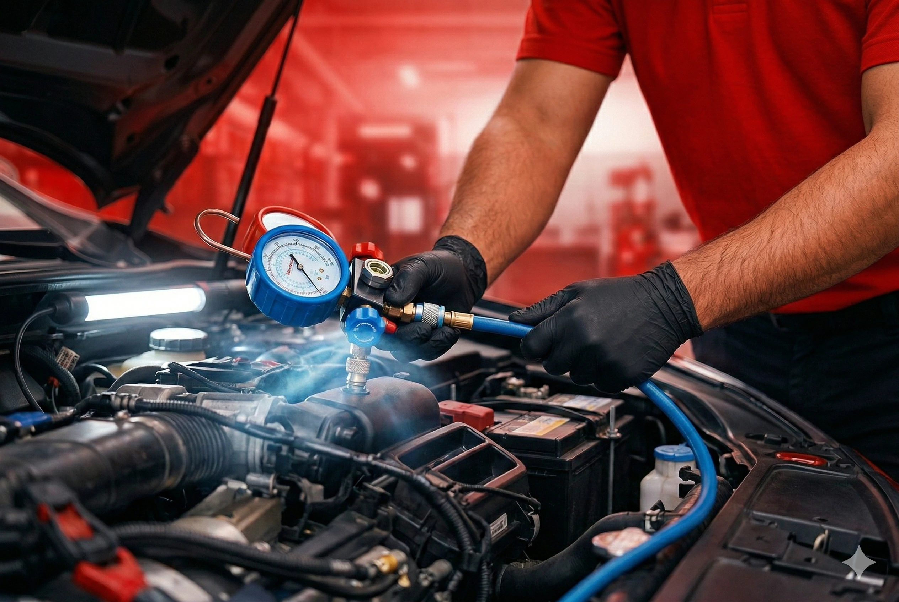

Real-time doorstep repairs
Book a certified mechanic in 30 seconds. We come to you—home, office or roadside.



Doorstep ServiceCar AC Repair
Car AC Repair
Starting ₹1,999
Certified mechanics at your doorstep. 12-point AC service with 30-day cooling warranty. Gas refill available as add-on.
2,00,000+Customers Served
4.8★Customer Rating
30-DayCooling Warranty
Same-DaySlots Available
12-Point Service
What's Covered in Your Car AC Service
Every booking includes a comprehensive 12-point inspection and service — no add-on surprises.
❄️
AC Gas Top-Up (Add-on)
Refrigerant refill (R134a / R1234yf) — charged separately based on quantity required.
🌀
Condenser Cleaning
Deep clean of condenser fins to restore heat dissipation and cooling efficiency.
🌬️
AC Vent Cleaning
Anti-bacterial clean of all cabin vents and ducts — eliminates odour.
🔍
Leak Detection Test
Electronic pressure test to detect refrigerant leaks before they worsen.
🔧
Compressor Belt Check
Inspect belt tension and condition; re-tension or flag for replacement.
🌡️
Cooling Performance Test
Pre and post-service temperature reading to confirm optimal cooling.
💨
Cabin Air Filter Check
Inspect cabin filter; clean or replace for fresh, allergen-free airflow.
⚡
Blower Motor Inspection
Test all fan speeds and blower motor for correct airflow volume.
🎛️
AC Control Panel Check
Verify that all control knobs, modes and temperature selectors function correctly.
🛡️
Compressor Clutch Test
Verify clutch engagement under load — prevents catastrophic compressor failure.
🌿
Evaporator Inspection
Visual check for signs of ice build-up, blockage or evaporator core damage.
📋
Post-Service Health Report
Digital job card with findings, parts used, and next service recommendation.

Our certified mechanic at your doorstep — no garage visit needed.
Transparent Pricing
Car AC Repair — Pick Your Vehicle
All prices include gas refill, cleaning, leak test and service warranty. What you see is what you pay.
Save More
Price Comparison — Why Ride N Repair Wins
Get dealership-quality AC repair at a fraction of the cost.
| Vehicle Type | Authorized Center | Local Mechanic | Ride N Repair |
|---|---|---|---|
| Hatchback | ₹3,999 | ₹3,099 | ₹1,999 Save ₹2,000 |
| Sedan / SUV | ₹4,599 | ₹3,499 | ₹2,399 Save ₹2,200 |
| Luxury | ₹21,999 | ₹14,999 | ₹12,999 Save ₹9,000 |
* Prices compared vs. authorized service centers. Savings vary by city and vehicle model. Ride N Repair pricing includes gas refill, cleaning, and warranty.
Simple Process
How Car AC Repair Works
01
📱
Book Online or Call
Select your vehicle type, choose a date & time slot. Takes under 2 minutes.
02
🚐
Certified Mechanic Arrives
Our uniformed, background-verified mechanic arrives at your doorstep on time.
03
🔧
12-Point AC Service
Full AC diagnosis and service performed at your home, office, or parking spot.
04
✅
Digital Report + Warranty
You receive a job card, service photos, and a 30-day service warranty.
Our Promise
Why 2,00,000+ Customers Choose Ride N Repair
🏠
Doorstep Service
We come to you — no waiting at garages, no drop-offs, no hassle.
🎓
Certified Mechanics
Background-verified technicians with brand-specific AC training and experience.
💰
Transparent Pricing
Fixed price upfront. No hidden charges. No surprise bills after service.
🔒
30-Day Warranty
Every AC service carries a 30-day or 1,000km cooling performance guarantee.
📸
Before & After Photos
Receive photo documentation of every job — full transparency, every time.
⚡
Same-Day Slots Available
Book before noon and get your AC serviced the same day in most cities.
Common Questions
Car AC Repair — FAQ
Is Your Car AC Not Cooling?
Get It Fixed Today.
Doorstep service · Certified mechanics · ₹1,999 onwards · 30-day warranty